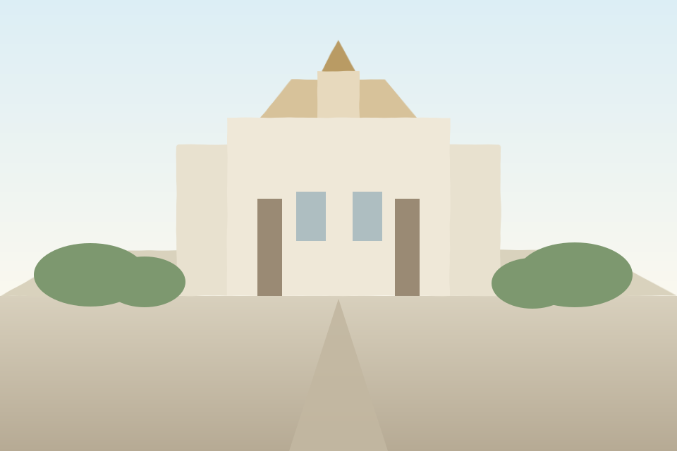
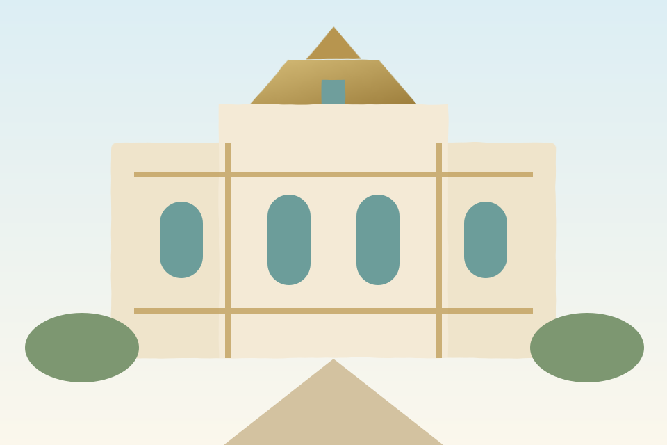
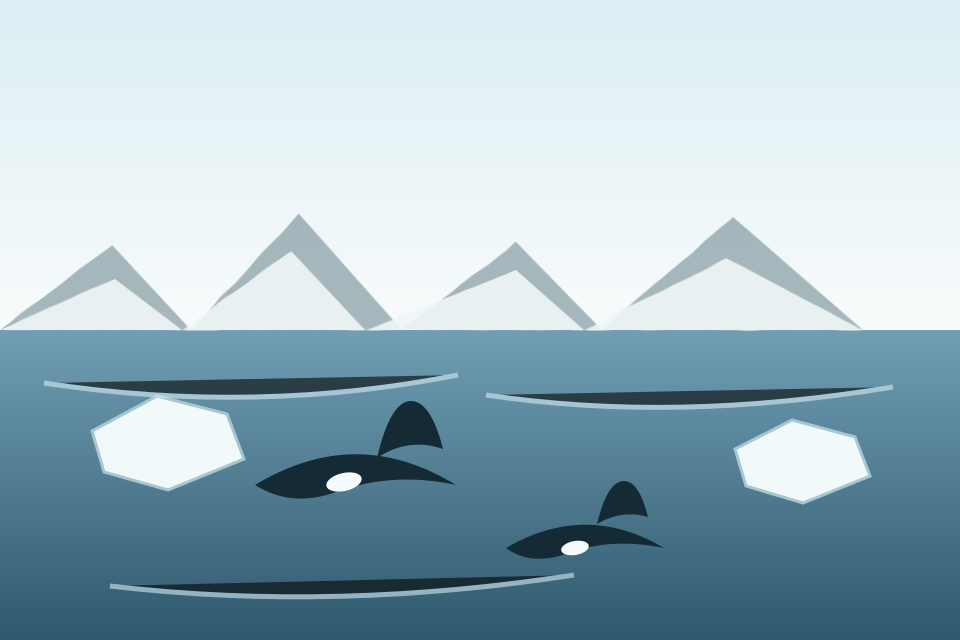
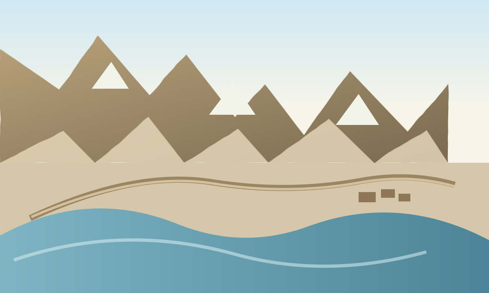
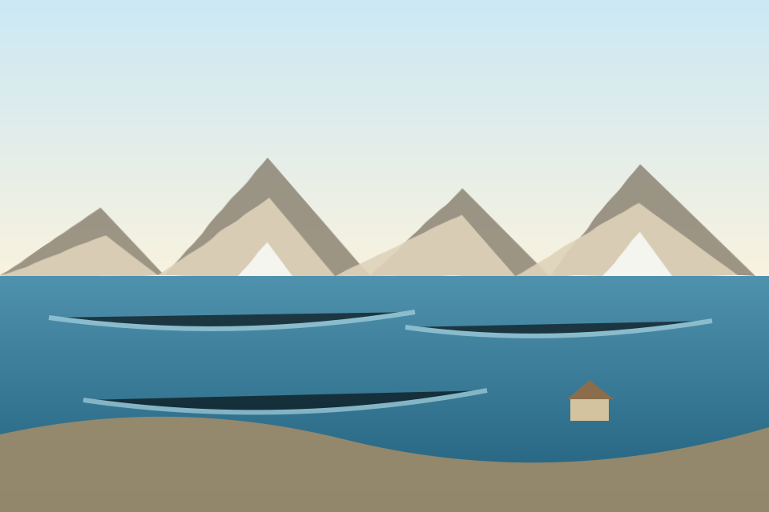

🌐
Antarctica
静寂と壮大な自然が広がる世界

世界地図から、気になる国を見つけよう
›自然、街並み、文化、絶景…テーマから世界を見る
›199の国・地域から、旅のインスピレーションを得る
›JOURNEY LENS
写真と物語がある国から、世界に出会う。

氷と火の島。自然がつくる絶景の数々
静寂と壮大な自然が広がる世界
ウユニの鏡張りが心を解き放つ
大自然と野生動物の楽園
大地を揺らす滝の轟き
古代の遺跡が語るアンデスの世界
音楽と色彩があふれる島国
EXPLORE THE WORLD
199の国・地域を最初から同じレイアウトに置いています。公開済みページだけ開きます。
英語名・日本語名で検索できます。
該当する国・地域がありません。
EXPLORE BY MAP
地理の近さや遠さから、まだ知らない国を見つける。

国名だけでなく、海の向こう、山脈の先、隣り合う国々から世界を見ていく入口です。
地図上の国名を押すと、199の一覧でその国を表示します。EXPLORE BY THEME
地域を隔てず、惹かれる景色や体験から世界を見る。
滝、氷河、砂漠、森。地球のスケールに出会う。

歴史都市から現代都市まで、暮らしの表情を見る。

建物、信仰、食、祭り。土地に積み重なった時間へ。

海、草原、森。生きものが主役になる場所へ。

目的地だけでなく、移動そのものが記憶になる旅。

青の濃さ、岸辺の風景、水のある世界をたどる。
ABOUT
JOURNEY ATLASは、199の国・地域を一国一ページで見せるビジュアル図鑑です。数字や知識より先に、景色、地図、文化、道、生きものから「ここへ行ってみたい」をつくります。
旅の記録を、写真と物語で。